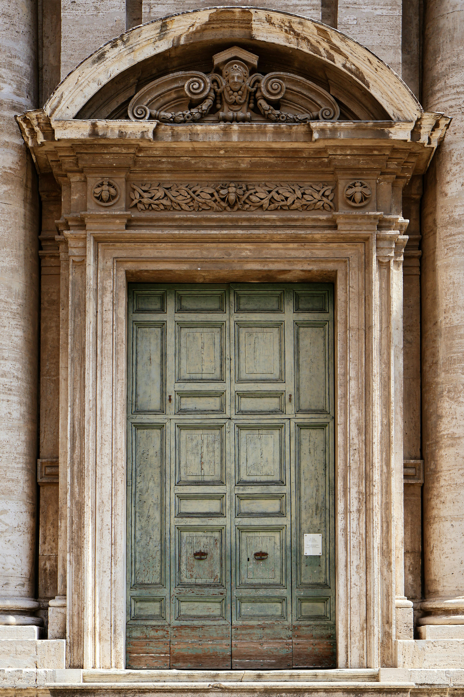
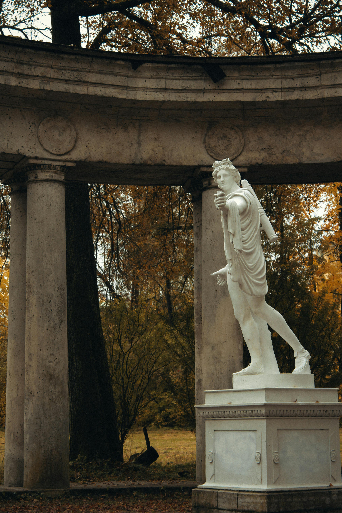

A história da arte é a narração da evolução das expressões artísticas ao longo dos tempos. É um olhar profundo sobre como diferentes culturas e períodos históricos influenciaram as formas de arte, desde as primeiras pinturas rupestres até as criações contemporâneas
Cursos e livros, museus e galerias, documentarios e vídeos, analise de obras, aulas e palestras e praticar a arte
Estudar artes pré históricas, artes clássicas, fazer alguns mapas mentais para ajudar nos estudos e interpretar imagens
